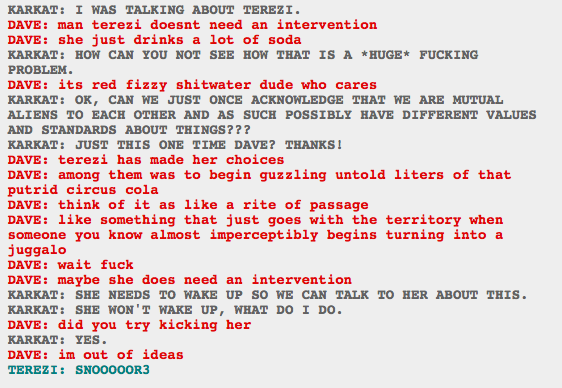

I think this is one of the funniest species differences. Faygo means a descent into darkness.
“did you try kicking her” “YES.” “im out of ideas” is completely hilarious to me. I imagine Dave finding Terezi sleeping and having to kick her awake all the time. I bet she sleeps like a log, even if she’s not in a sugar coma.